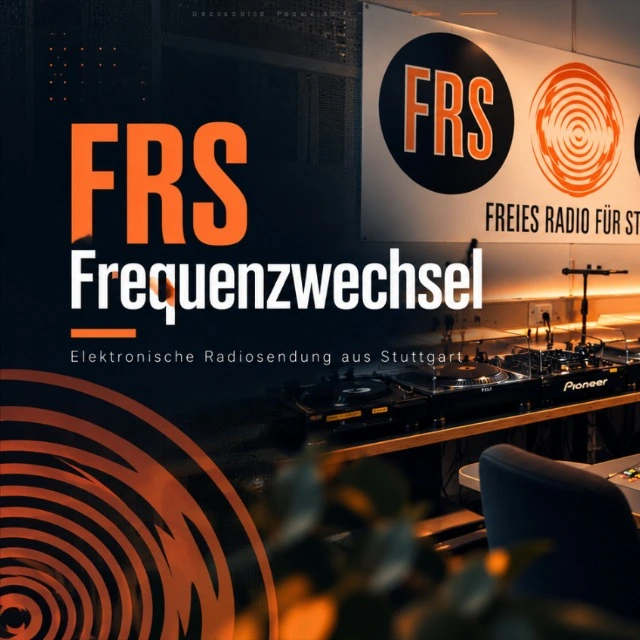

FrequenzwechselPlenum-Pitch
FrequenzwechselPlenum-PitchFrequenzwechsel.
DJ-Sets zwischen Deep House, Electro, Techno und Trance beim Freien Radio für Stuttgart.
Vorschlag für einen Pilot
Ein elektronisches Studio-Set mit kurzen Ansagen. Sendezeit, Länge und redaktionelle Anbindung klären wir mit dem FRS.

FrequenzwechselRedaktionWelcher Weg passt zum Pilot?
Bestehende Redaktion
Ein Gast-Special gemeinsam mit einer Redaktion, zu deren Programm unsere Musik passt.
Surprise
Einen Sendeplatz für einen einmaligen Test anfragen und bei Bedarf Unterstützung für die Produktion besprechen.
Eigene Redaktion
Für eine regelmäßige Reihe brauchen wir mindestens drei Personen und ein Sendekonzept von maximal einer Seite. Das Plenum entscheidet über die Aufnahme.
FrequenzwechselFormatEine Stunde als Beispiel
FrequenzwechselTechnikVinyl und digital im Studio
Genanntes DJ-Setup
- Technics SL-1210 MK2
- Pioneer CDJ-900 Nexus
- Pioneer DJM-900 Nexus
Vor dem ersten Set prüfen
- Anzahl der Decks, Nadeln und Phono-Eingänge
- USB-Wiedergabe, Kopfhörer, Monitoring und Pegel
- Zeit für Soundcheck und eine Probeübergabe
- Tracklisten, Musikmeldung und Mitschnitte
FrequenzwechselTermineStudio, Workshops und Plenum
Studiobesuch am 18.11.
Mittwoch, 18. November 2026, zwischen 13 und 18 Uhr. Stöckachstraße 16a, Eingang Heinrich-Baumann-Straße. Genaue Uhrzeit in der Crew abstimmen.
Plenumsrhythmus
Erster Mittwoch im Monat. Der 2. Dezember 2026 ist der nächste reguläre Termin nach diesem Rhythmus. Vorstellung mit dem FRS absprechen.
Einführungen
Was ist Freies Radio?
Fr., 20.11.2026 · 19:30–22:30 Uhr
Technische Einführung Studio 1
Mi., 13.01.2027 · 19–22 Uhr
Teilnahme und erforderliche Workshops mit dem FRS abstimmen.
FrequenzwechselOrganisationWer übernimmt welche Aufgabe?
Crew
- DJ-Sets und Übergaben vorbereiten
- Moderation und Zeitplan abstimmen
- Technik testen und Musikmeldung vorbereiten
- Kontakt zur Redaktion und zum Radio übernehmen
Förderverein
Regelmäßiges Senden setzt die Mitgliedschaft sowie die Anerkennung der Satzung und des Redaktionsstatuts voraus.
Ob eine Person für die Crew ausreicht und welcher Beitrag aktuell gilt, fragen wir beim FRS. 30 € jährlich nennt ein älterer Antrag als ermäßigten Tarif.
FrequenzwechselEntscheidung